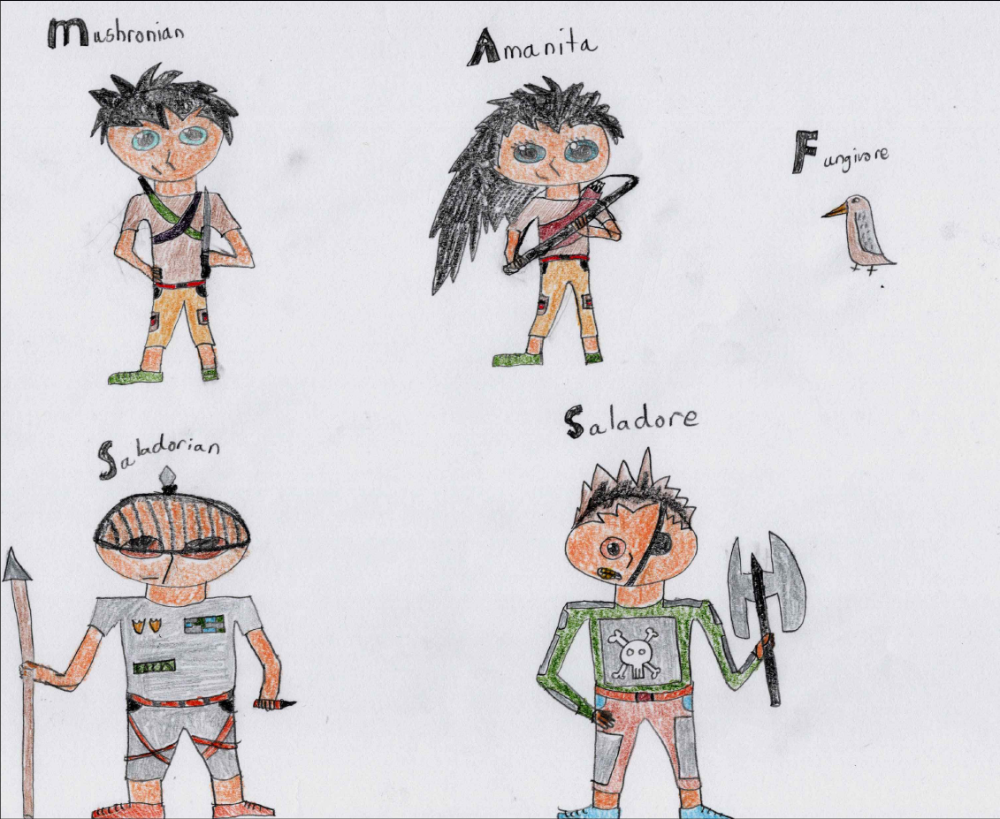

THE GUIDE
THE GUIDE
Game Summary!
In the faraway island of Fungi, there dwells a humble population of villagers living in four villages that are located at each compass direction on the island. The island villagers would be living a satisfied, happy life if not for the invading Saladorians led by the ruthless Saladore The Tyrant who conquered each of the villages and forced the inhabitants to obey his every rule. To combat this threat, two heroes have risen among their fellow citizens to take down these enemies. Will Mushronian and Amanita be able to vanquish their foes or will they succumb to the iron fist of the Saladorians?!
Using Query Bar
The Query Bar allows users experienced in SQL to search for information in the FungIsle database. To run the query, simply press "submit." To clear the query bar, press "erase." The Query Bar only has select access, so you will not be able to update, delete, or otherwise change the database.
Using the Scavenge Feature
In order to recover their health, our heroes and their pets eat mushrooms that grow on the island. Simply choose your character or animal and press "scavenge" to send them out to explore the island. There are several different mushroom types that your hero or animal could collect, but they all recover 100 health, except for the almight mushroom which recovers 1000 health. Should you be lucky enough to be graced with its presence, you can recover the entire health of a hero. Note: heroes can only hold ten mushrooms of each type in their backpack, and animals can carry much less than that.
Using the Eat Mushroom Feature
Use this feature to recover the health of your characters, simply choose your hero or animal and then choose from the list of possible mushrooms that they have. If your character eats a mushroom while at full or near-full health, their health will not recover, but they will still eat it anyway.
Using the Attack Feature
The attack feature is the most powerful and also most complex feature of this game. As the official tactician for Mushronian and Amanita, it your job to communicate with them where to go, and who to attack. Both heroes start at their base, but you can send either of them (one at a time) to any of the four lands. Once all four lands have been freed (i.e. all the Saladorian Henchmen in each land are defeated), you can direct the heroes to Hell's Cave to fight off Saladore himself! Obviously, it is helpful to use the query bar to get more information into the exact details of each hero, but you can get the main gist fairly easily. Both heroes can be in the same land at once, but only one hero can attack at a time. In addition, all Saladorians in a given land will attack a hero that attacks any one of them, so be careful! Heroes use their vehicles to travel, but those vehicles' stats do not affect the heroes' stats because heroes have to jump out of their vehicle. All humans have an attack and defense multiplier which is a number that is multiplied by their weapon's stats for their dmg/def. Def effectively cancels dmg against a human. A hero who attacks Saladorians in a village, may not leave until they have defeated all resident Saladorians. Once a hero dies, they will be unable to do anything. If a hero has an animal or pet, they can be used to add on dmg to an attack, but they cannot contribute defense or take dmg.
The FungIsle Characters!
You can view the files for this project HERE.